Our photo
Our photoETH SMDLDC · Project
Bern Heat Islands
Predicting the city's heat-stress map from aerial photos. The result first, then the data, the photos, three modelling approaches (Classification, Ordinal, Regression) and what is still weak.
1Intro
Result in brief
A pretrained U-Net predicts the heat map to within about 1.9 °C
We predict the 14-level heat-stress map of Bern from photos and compare three approaches, named by what the model outputs: Classification (one of 14 classes), Ordinal (13 ordered yes/no outputs) and Regression (one number in °C). With the 2021 photos the best Classification model reaches a mean error of 1.931 °C (median decoding, 20 runs), against 1.978 °C on the original photos. The 2021 photos were better in 20 of 20 paired runs. Ordinal with the CORN head ties Classification on the original photos (1.976 against 1.975 °C). Regression has finished all five folds. The goal was 1.5 °C.
Three weaknesses shape every number below. The models never predict above 43 °C (0.77% of the true map). The 2021 photos were chosen by date and forest colour and are the weakest year on structure. And photos and labels are years apart, so some of the error is not the model's.
1.931 °CClassification, 2021 photos, median decoding, 20 runs. Better than the original photos in 20 of 20 paired runs.
1.976 °COrdinal (CORN), original photos, five folds, median decoding. Classification on the same setup: 1.975 °C.
2.005 °CRegression (exact target), folds 0 to 4 of five, scored against exact degrees (stricter). Classification on the same folds: 1.975 °C median decoding.
+0.43 °Cthe best model is still above the 1.5 °C goal
0.00%of pixels predicted above 43 °C by Ordinal (CORN), against 0.77% in the true map
0.78 °Cfloor from the 14 bins when scoring against exact degrees (tile 201)
Model explorer
Classification (Timo)Ordinal (Chenjie)Regression (Timo)Baseline
Dot: mean MAE in °C. Line: spread across folds or runs, where there are at least three. Axis from 1.4 to 2.6 °C, so the colour-only baseline sits off the scale. Regression has no decoding choice: its dot shows direct degrees in both views, and with the exact target it is scored against exact degrees on a different pixel set (stricter). Same numbers as the Comparison chapter.
| Approach | Variant | Photos | Folds or runs | MAE, median decoding (°C) | MAE, argmax decoding (°C) | Within one level | Category accuracy |
|---|
Prediction against the true map

 PredictionTrue map
PredictionTrue map
Errors cluster in the western farmland and the dense centre. Photos and labels are years apart and the 2021 photos are the weakest on structure.
The brief
Predict heat islands from photos
- Train image-to-image models on data from map.bern.ch.
- Compare the performance of different vision models.
- Analyse how the models perform outside of Bern.
Takeaways the supervisors are after: working with image2image models, and evaluating performance and generalisability. Supervisors: Rafael Bischof, Andreas Müller.
2Data preparation and exploration
What we were given
The dataset folders
Every image is a 256 × 256 RGB PNG and pairs with its partner by id. Most folders are derived from one core set.
| Folder | Pairs | What it is | Use |
|---|---|---|---|
Satellite/ + Heatmap/ | 2,275 | Core tiles, ids 1–2275 | Train / val / test |
SatelliteMirror/ + HeatmapMirror/ | ~2,275 | Exact horizontal flips of the core (pixel difference 0.0) | Replace with on-the-fly flips |
Satellite_Large/ + Heatmap_Large/ | ~364 | Zoomed out, about 2× the ground width per tile | Scale-transfer test |
*Mirror_Large/ | 365 | Flips of the Large set | Skip |
00AllSatellite/ + 00AllHeatmap/ | ~5,300 | Union of everything above, plus 70 duplicate files named (1), (2) | Avoid |
heat_islands.zip | - | The same Images/ tree with __MACOSX metadata, 1.5 GB | Archive |
Leakage trap
A random split over 00All* puts a tile in training and its mirror image in the test set. The scores would measure memorisation. We work from the core set only and flip during training.
How we analysed it
Eight passes over the data
Each pass answered a question the previous one raised.
- Colour census
Counted every RGB value across all 2,275 heatmaps (149 M pixels, 2,311 distinct colours). Twelve colours cover 90% of pixels and the rest are anti-aliasing and drawn-on street lines.
- Snap to palette
Assigned each pixel to its nearest main colour and flagged anything more than 12 RGB units away as overlay. About 95% of pixels per tile snap cleanly.
- Order the classes
First estimate: the mean greenness of the photo under each colour. Then the map.bern.ch legend arrived, and we fitted it directly as a semi-transparent blend.
- Reconstruct the layout
Compared the edge pixels of neighbouring ids.
id+1continues to the right, andid+65sits directly below in 200 of 200 samples. The tiles form one stitched map. - Level distribution
Mapped every pixel to one of the 14 temperature levels and compared the core and Large sets.
- Fit the rendering per tile
Tiles were exported with different layer opacities (0.50 to 0.73) and, in three tiles, a darker building grey. Each tile gets its own fitted palette before decoding.
- Find the heat raster
Fitted one grid of cell boundaries over the whole stitched map. 98.55% of cells contain a single colour, so the cells are the true units of the data.
- Check buildings against the photo
Compared the heatmap's building outlines with what the photo shows, in both directions: outlines with no building, and buildings with no outline.
Finding 1
The tiles are one continuous map of Bern
Tile idN sits at row (N−1) // 65, column (N−1) % 65. Stitched together, the 2,275 tiles cover the city from the Wohlensee loop in the west to the Aare bend around the old town. Drag the slider to compare photo and heat map.

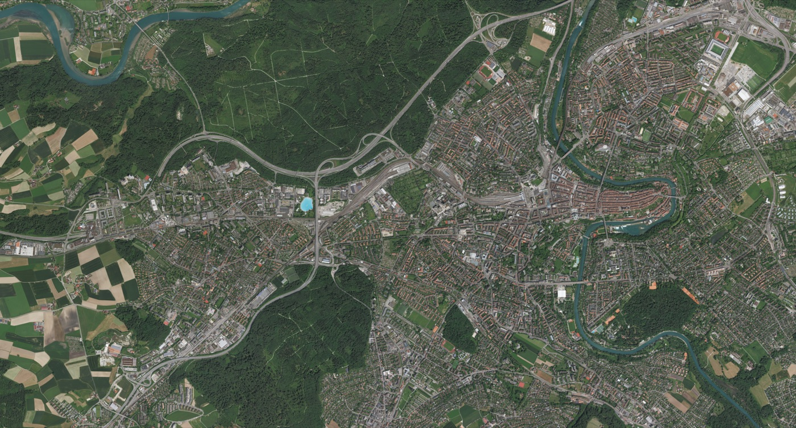
PhotoHeat mapFinding 2
The pastel colours are the official legend at 60% opacity
The tiles show softer colours than the legend. Blending each legend swatch with a near-white background (0.6 · legend + 0.4 · 250) and matching it to the observed colours gives a one-to-one assignment with a mean error of 12.5 RGB units. So the target is an ordered temperature scale, not a set of unrelated classes. The five categories in the last column are shown with English names; on map.bern.ch they read keine, schwach, mässig, stark and extrem Wärmebelastung.
| Level | Range | Legend | In tiles | Fit error | Heat-stress category |
|---|
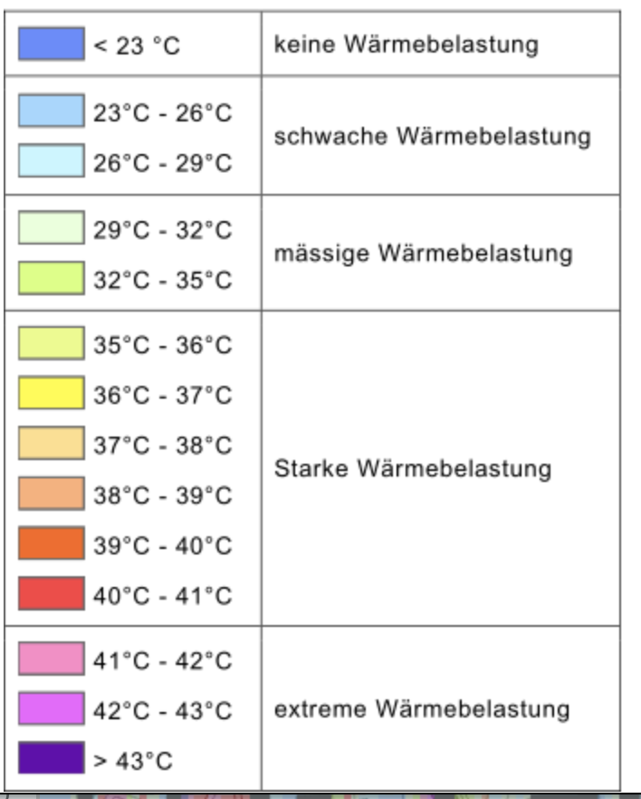
The worst fit is > 43 °C (error 39.8): dark purple loses the most in a blend. It is still the only plausible partner, and it covers just 0.7% of pixels.
Finding 3
The temperatures cluster in two groups
Excluding buildings and overlay pixels, over half of the area sits at 23–29 °C (forest, parks, water edges). A second peak sits at 38–42 °C (sealed surfaces, rail, open fields). The middle levels are thin. This shape decides the loss: a plain mean-squared regression would hedge towards 32 °C where it is unsure, a value that is rare in the data.
Core set, bar coloured by its legend levelLarge set
| Level | Core % | Large % | Diff (pp) |
|---|
Heat data: Geodaten Stadt Bern. The core and Large sets have nearly the same distribution (at most 0.4 percentage points apart per level), so training on one scale and testing on the other is a fair experiment. Heat raster cells measure 9.45 px in core tiles; the Large tiles mix 7.55 and 11.35 px.
Finding 4
Where photo and heat map disagree
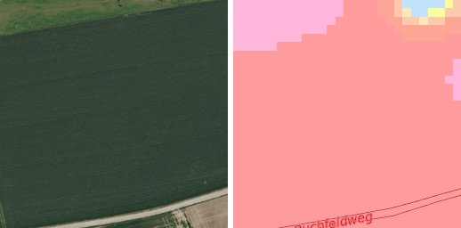

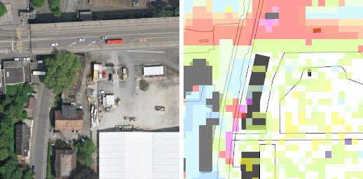
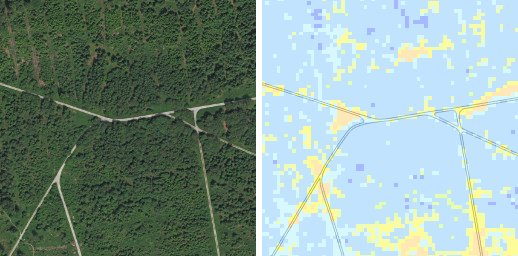
Finding 5
The heat map is a grid of 9.45 px cells, so lines and labels can be painted over
The heat values were computed on a coarse raster and then drawn with street lines and names on top. Fitting one grid over the stitched map gives cells of 9.45 px in both directions. With that grid, 98.55% of cells hold a single colour.
The cleaning rule follows from it. A pixel that already matches a legend colour keeps it. A pixel that does not (line, label, anti-aliasing) takes the most common level of its cell. That changes no correctly coloured pixel. Before cleaning, 4.29% of pixels were unreadable; after, 0.077% remain unknown, all in places where the source map has no value.


Not every tile was rendered the same way
A first version assumed one palette for all tiles and decoded half of id 382 as unknown, although its buildings are plainly visible. Fitting the layer opacity per tile shows several export batches: 1,411 tiles at 0.64, 360 at 0.55, 96 at 0.63, and a few others. Tiles at the common opacity are unaffected by the fix (0.01% of pixels change). Anyone downloading more tiles later should expect the same variation.
One raster for the whole city
The grid's offset moves by about 0.85 px from one tile to the next (256 mod 9.45). The city's heat map was rasterised once and then cut into tiles, so every cell boundary can be computed from a tile's row and column.
Finding 6
Some buildings exist in only one of the two sources
The building outlines in the heat map and the photo were made at different times. Some outlines sit on open fields (planned or newer buildings), and some buildings in the photo have no outline, so the heat map gives them a temperature.
A first check looked at vegetation under each of the 14,241 outlines. 515 outlines (1.06% of building area) are more than 60% vegetated. That check also catches green roofs, which are real buildings. For a reliable flag in both directions, a small building detector (a U-Net) is trained on the photos in 5 spatial folds, so each tile is judged by a model that never saw its neighbourhood. It reaches a building IoU of 0.62 to 0.66 per fold. Where it confidently disagrees with the heat map, the area is flagged: an outline whose mean building probability is below 0.15, or a region above 0.85 with no outline.


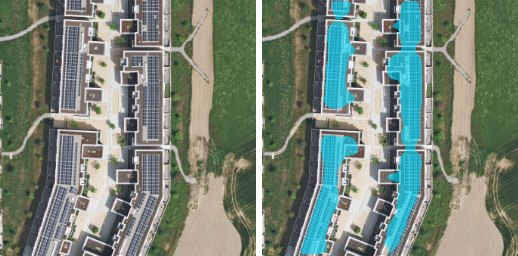
How flagged areas are used
Flagged regions and a ring of 6 px around them are excluded from training and evaluation, like unknown pixels. The heat next to a mismatch was modelled with a different building layout than the photo shows.
Result
The cleaned heat map of Bern
All 2,275 tiles decoded to levels, with buildings and the areas to ignore marked. Training and evaluation skip 0.80% of the pixels.

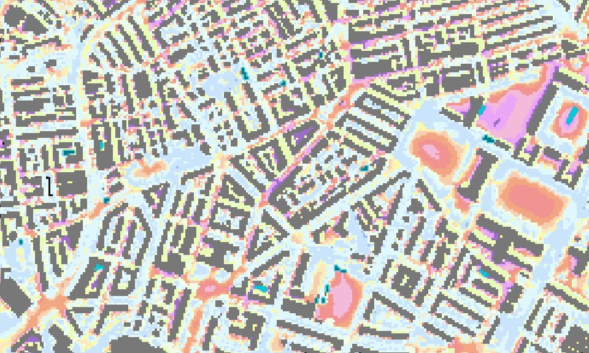
| Ignored for training | Regions | Share of pixels |
|---|---|---|
| No value in the source map | - | 0.08% |
| Outline without building in the photo | 581 | 0.29% |
| Building in the photo without outline | 237 | 0.10% |
| Ring of 6 px around a mismatch | - | 0.33% |
| Total | 0.80% |
The flags come from a detector, not from ground truth, so they are suspected mismatches. A sample check found the "building without outline" flags reliable; some small "outline without building" flags sit on sheds and garages the detector misses. They cover little area and were kept.
Finding 7
Surface colour carries heat, and some of it disagrees with the photo
Using simple colour rules on the photo (green vegetation, brown or bare, grey sealed), the heat level of each surface differs a lot. Mean level is 3.6 over green vegetation, 6.5 over grey sealed surfaces and 8.0 over brown or bare ground.
Two kinds of disagreement stand out. Green and hot: the photo shows vegetation, but the heat is 40 to 41 °C or hotter. This is 7.1% of heat pixels, mostly crop fields. Brown and cool: the photo shows bare ground, but the heat is 26 °C or cooler. This is 0.13%.
A disagreement is a suspicion, not an error. The heat may have been computed on another date, when the field was bare. The colour rule is also crude: brown catches roofs and soil alike.
| Photo says | Heat says | Share of heat pixels | Reading |
|---|---|---|---|
| Green vegetation | 40 to 41 °C or hotter | 7.09% | Mostly crop fields: date mismatch or label noise |
| Brown or bare | 26 °C or cooler | 0.13% | Rare; cut-over forest and soil |
Using it in training
Two masks are prepared, so each model can choose. The base mask ignores 0.80% of pixels. The land-cover mask also ignores the two conflict types, which brings it to 7.01%. Excluding them removes the farmland examples most needed for learning, so the choice should be tested rather than assumed.
Manual review: a tile-by-tile viewer shows the flags next to the photo and the heat map. Heat data in those views: Geodaten Stadt Bern.
Finding 8
Which photo year matches the 2020 heat map
The labels are the Bern PET map for 14:00 in 2020 (Stadt Bern, GeoTIFF with 5 m cells). The photos are SWISSIMAGE 10 cm from swisstopo, but the capture year of our copies was not recorded. For the same 1 km square the open index lists three years: 2018, 2021 and 2024. There is no 2020 or 2023 item for this square.
Our photo SWISSIMAGE 2018
SWISSIMAGE 2018 SWISSIMAGE 2021
SWISSIMAGE 2021SWISSIMAGE 2024
Ten tiles, three years
For ten tiles we measured how well each year lines up with our photo: correlation at the same footprint, taking the best shift within ±6 px. A higher value means the same structures sit in the same places.
| Tile | 2018 | 2021 | 2024 | Best year |
|---|---|---|---|---|
| 346 | 0.55 | 0.51 | 0.58 | 2024 |
| 236 | 0.62 | 0.62 | 0.72 | 2024 |
| 587 | 0.85 | 0.11 | -0.03 | 2018 |
| 488 | 0.36 | 0.26 | 0.42 | 2024 |
| 1002 | 0.47 | 0.51 | 0.59 | 2024 |
| 1233 | 0.35 | 0.30 | 0.53 | 2024 |
| 1580 | 0.32 | 0.60 | 0.51 | 2021 |
| 1812 | 0.33 | 0.59 | 0.63 | 2024 |
| 2098 | 0.22 | 0.36 | 0.30 | 2021 |
| 2078 | 0.14 | 0.44 | 0.46 | 2024 |
| Mean | 0.42 | 0.43 | 0.47 | 2024 best on 7 of 10 |
Ours201820212024
346236587488100212331580181220982078
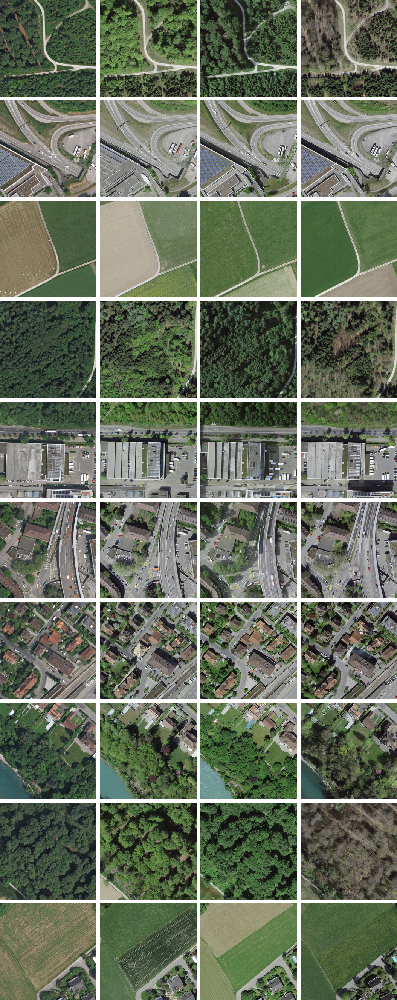
Forest colour
Photos taken in different seasons show forests in different greens. On green-dominant pixels of the same tiles, our photo has R 68, G 89, B 63 . The distance of each year to it:
| Year | Distance to our forest colour | Reading |
|---|---|---|
| 2021 | 9 | Closest |
| 2024 | 23 | Least green (green lead 17 vs 23) |
| 2018 | 26 | Furthest |
Decision: 2021 is the working photo reference
It is the nearest year to the 2020 labels and the closest in forest colour. It is also only the second best on structure (0.43, against 0.47 for 2024). The notes record that tile 201 does not look like a clean 2021 capture, so the photos are probably not a single-year product. Every result that uses these photos has to say so. Open item: Bern's own orthophoto downloads (2020 or 2023, if they exist) would be a closer match for the labels.
Finding 9
Placing the label grid on the 5 m GeoTIFF
The city's own raster has 5 m cells, finer than the 9.45 px heat cells in our tiles. To use it, each tile has to be put on the right spot of the GeoTIFF (LV95 coordinates). We fitted the footprint of the tile grid against the raster: pitch 135.5 m, origin at E 2594060 shifted by +5 label px, and N 1201890.
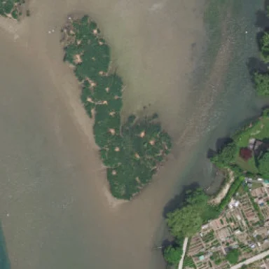
Photo Current heat labels
Current heat labels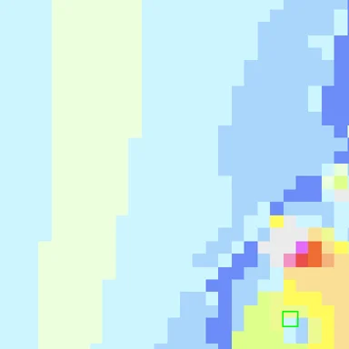
5 m GeoTIFF, +5 label px3Modelling
Approaches
Three ways to set up the output, compared on equal terms
The three approaches are named by what the model outputs. They share the backbone family (a U-Net, with an ImageNet ResNet-34 encoder for the main runs), the split, the photos and the metrics. They differ only in the output and the loss. Two people run them: Timo runs Classification and Regression, Chenjie runs Ordinal. Which approach is used in the final result depends on what the comparison shows.
Shared protocol
Split: five spatial folds of 5 × 5 tile blocks, the same for every run (the Split chapter below explains why). Photos: the original photos, and for Classification also the 2021 photos. Labels: the 14 heat levels from the Bern map; Regression can also use exact degrees. Metrics: MAE in °C, accuracy within one level, and accuracy on the five heat-stress categories, which non-specialists can read. Training: 60 epochs, batch 16, AdamW with learning rate 0.002, OneCycle, flips and rotations, smoothed model selection, base mask, RGB input, seed 0 unless the row says otherwise. Every approach is also meant to run with the land-cover mask, so that the effect of excluding the conflicts is measured, not assumed.
Side tasks, also open: an RGB regression (pix2pix-style) reference, and a search for a photo closer in date to the heat map (SWISSIMAGE 2021 is chosen for now, Bern's own orthophoto is still open).
Evaluation design
Splitting by spatial block
The tiles are neighbours on one map, and neighbours look alike. A random split would put near-twins on both sides and flatter the scores somewhat. Our plan:
- Cut the 65 × 35 grid into 5 × 5-tile blocks and assign whole blocks at random to train, validation and test (about 70 / 15 / 15).
- Use the Large tiles as a measured transfer test: a different scale, with ground truth.
- Use photos from outside Bern (for example swisstopo SWISSIMAGE) for the generalisation task. Without heat maps there, this check is qualitative, unless another city publishes a comparable map.
The in-Bern test asks "how good on unseen tiles of this city". The outside imagery asks "does it work elsewhere at all". The report needs both, and only the first produces error numbers.
4Results and comparison
Approach · Classification
Classification reaches 1.93 °C with a pretrained encoder and the 2021 photos
Each pixel gets one of 14 heat levels. Owner: Timo. This is the approach with the most runs: two backbones, two photo sets, four seeds.
Setup
- Output and loss: 14 class scores per pixel, cross-entropy.
- Decoding: argmax is the stored default; median decoding picks the level that minimises the expected error in °C and is the headline number. It lowers the MAE by about 0.14 °C and lowers the within-one-level score by about two points, because the median can sit between bins.
- Backbones: a U-Net trained from scratch, and a U-Net with an ImageNet ResNet-34 encoder (our decoder, base mask, RGB input, 60 epochs, smoothed model selection).
- Photos: the original photos, and the SWISSIMAGE 2021 photos at the fitted footprint. Labels are the unchanged 2020 levels.
- Runs: five folds, and four seeds for the encoder, which makes 20 runs per photo set. The colour-only baseline is kept in every comparison.
Results
Original photos
Every number is the mean over the folds, with the spread after it. Within one level and category accuracy use argmax decoding (a).
| Variant | Folds or runs | MAE, argmax decoding (°C) | MAE, median decoding (°C) | Within one level | Category accuracy |
|---|---|---|---|---|---|
| Colour-only rule (modal level per photo colour class) | 5 folds | 5.694 ± 0.483 | — | 56.4%a | 53.8%a |
| U-Net from scratch | 5 folds, seed 0 | 2.257 ± 0.125 | — | 75.5%a | 71.6%a |
| ResNet-34 encoder, seed 0 | 5 folds, seed 0 | 2.113 ± 0.109 | 1.975 ± 0.100 | 77.5%a | 73.5%a |
| ResNet-34 encoder, 4 seeds | 20 runs (5 folds × 4 seeds) | 2.116 ± 0.107 | 1.978 ± 0.099 | 77.4%a | 73.4%a |
What the seeds tell us
The result is stable: four seeds give the same mean within 0.02 °C, so the 1.98 °C figure is not a lucky draw. The error is not spread evenly, though. Folds 0 to 2 average 2.05 °C and folds 3 and 4 average 1.86 °C; the spread between seeds is at most 0.05 °C on any single fold. The largest errors sit in the high-PET areas with green cover (see Finding 7).
2021 photos
One thing changed: the photos (SWISSIMAGE 2021 at the fitted footprint). Labels, split, model, loss, epochs, model selection, mask and input are the same. Four seeds times five folds make 20 runs for each photo set.
| Decoding | Original photos (°C) | 2021 photos (°C) | Reading |
|---|---|---|---|
| Argmax | 2.116 | 2.060 | Paired by seed and fold: mean difference -0.056 °C (sd 0.033), 2021 better in 20 of 20 runs |
| Median | 1.978 | 1.931 | Spread over runs 0.104. Gain about 0.05 °C; not paired seed by seed for the median runs |
Argmax by seed (2021 / original): 2.064 / 2.113, 2.055 / 2.124, 2.064 / 2.115, 2.059 / 2.113. Median seed means on the 2021 photos: 1.928, 1.948, 1.926, 1.920.
| Fold | Argmax, original | Argmax, 2021 | Median, original | Median, 2021 |
|---|---|---|---|---|
| Fold 0 | 2.194 | 2.146 | 2.068 | 1.982 |
| Fold 1 | 2.227 | 2.120 | 2.044 | 2.009 |
| Fold 2 | 2.177 | 2.152 | 2.051 | 2.035 |
| Fold 3 | 2.002 | 1.941 | 1.887 | 1.823 |
| Fold 4 | 1.981 | 1.942 | 1.837 | 1.804 |
How far to trust this
The gain is small next to the spread between folds (about 0.1 °C) but has the same sign everywhere, so the training strategy holds on the new photos. The result is still about 0.43 °C above the 1.5 °C goal. The 2021 photos were chosen by date and forest colour, and they are the weakest of the three years on structure. Photos and labels are still years apart.
Colour analysis on the 2021 photos. Same colour rules as Finding 7, run again on the 2021 photos. Not verified against the photos tile by tile.
| Measure | Original photos | 2021 photos |
|---|---|---|
| Green surface, share of area | 48.8% | 52.2% |
| Brown surface, share of area | 7.3% | 3.8% |
| Green and hot, share of heat pixels | 7.09% | 7.83% |
| Brown and cool, share of heat pixels | 0.13% | 0.086% |
| Building footprints more than 60% vegetated | 515 | 713 |
The vegetated footprints cover 1.06% of building area on the original photos and 1.66% on the 2021 photos; this may be the photo date. Per-pixel colour still does not separate cool from hot (best single channel 0.723 against chance 0.72). The existing flags were built from the original photos, so their pixel overlap with the 2021 photos is lower (IoU 0.56 against 0.85).
Case studies
Each tile is predicted by a model that never saw its block during training: ResNet-34, seed 2, median decoding, original photos. The tiles show different kinds of result. They are not the best tiles.
Whole city
PredictionTrue map
Error map
Absolute error per pixel, in °C, on the same scale as the heat map colours. Unscored pixels (buildings and flagged areas) are left blank.
0 °C8 °C or more
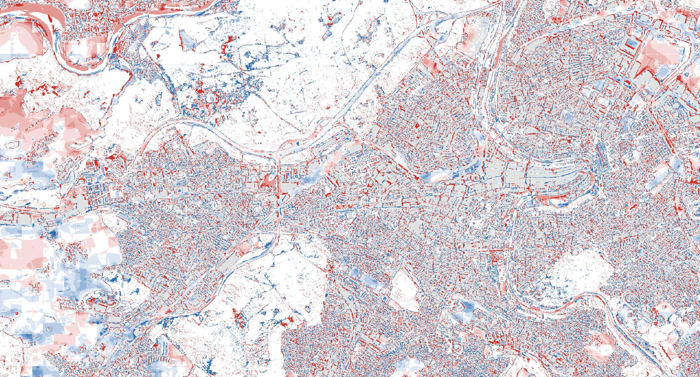
Tile examples
Left to right: aerial photo, heat map as published, model prediction. Same tile, same scale.

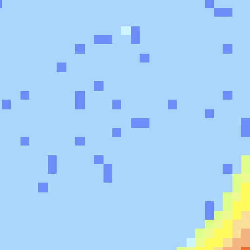
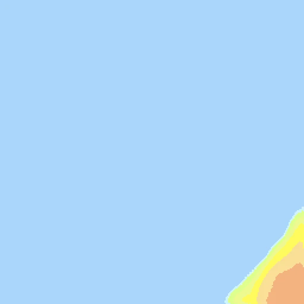


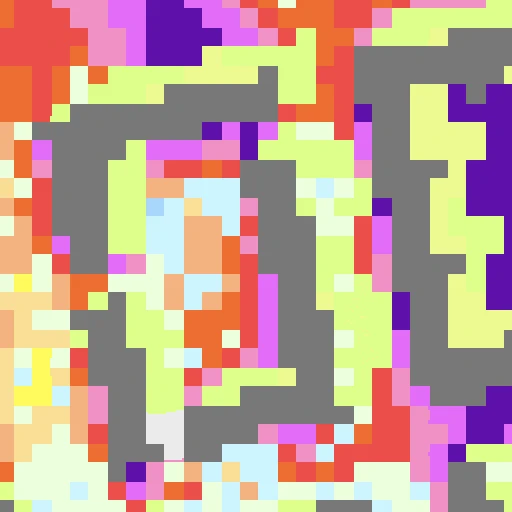


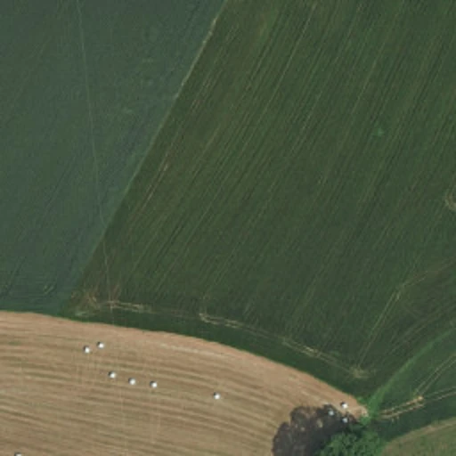

Weak points
- The hottest level is never predicted. Above 43 °C the model outputs 0.00% of pixels, against 0.77% in the true map. At 42 to 43 °C it outputs 0.15%, against 2.22%. Below 23 °C it outputs 0.35%, against 2.14%. Its extremes are pulled into the middle, so the hottest areas are always underestimated. This is a limit of the model, not noise in the data.
- The densest tiles are the worst. On the busiest built-up tiles the error is about 1.5 °C higher than in the rest of the city, so the 1.5 °C goal is not met where the city is densest (table below).
- Photos and labels are years apart. The 2021 photos were chosen by date and forest colour and are the weakest year on structure. Fields that look green are labelled 40 °C, which no photo-based model can learn.
- Binning sets a floor. Scored against exact degrees, any method that predicts bin midpoints has a minimum error of 0.78 °C (tile 201).
| Group of tiles | Tiles | Mean error per tile (°C) |
|---|---|---|
| All tiles | 2,275 | 2.10 |
| Rest of the city (outside both groups below) | — | 1.74 |
| Complex (top 25% by edge detail) | 569 | 3.19 |
| Dense buildings (top 25% by building share) | 569 | 3.02 |
| Complex and dense buildings | 253 | 3.24 (median 3.21; none below 2.0) |
What the errors look like
Errors come in clusters: whole neighbourhoods are off together. The model gets the broad pattern (forest and roads cool, sealed and built areas warm) but blurs fine detail. Its misses go both ways: too cool on the western fields and some built-up tiles, too hot on some sealed yards.
Approach · Ordinal
Ordinal: CORN ties Classification, CORAL falls behind
The model answers 13 ordered yes/no questions per pixel (is the level above k?). Owner: Chenjie. Same protocol as the Classification encoder runs; only the output and the loss change.
Setup
- Output and loss: 13 ordered yes/no outputs, binary cross-entropy. A variant with 13 independent thresholds (no ordering built in) was run by Timo as a check.
- Decoding: median (count of outputs above 0.5) is the headline; argmax is stored with each run.
- Protocol: U-Net with an ImageNet ResNet-34, five folds, 60 epochs, batch 16, AdamW with learning rate 0.002, OneCycle, flips and rotations, smoothed model selection, seed 0, original photos, RGB input. Base mask and land-cover mask were both run for CORN.
Results
Five folds, all pixels, mean with spread across folds. Within one level and category accuracy use argmax (a) for Classification and the independent thresholds, and median (m) for CORAL and CORN.
| Approach | Variant | MAE, median decoding (°C) | MAE, argmax decoding (°C) | Within one level | Category accuracy |
|---|---|---|---|---|---|
| Classification | ResNet-34 encoder, seed 0 | 1.975 ± 0.100 | 2.113 ± 0.109 | 77.5%a | 73.5%a |
| Ordinal | 13 independent thresholds, run by Timo | 1.987 | 2.115 ± 0.107 | 77.1%a | 73.0%a |
| Ordinal | CORAL head, base mask | 2.070 ± 0.105 | 2.433 ± 0.107 | 72.4%m | 70.5%m |
| Ordinal | CORN head, base mask | 1.976 ± 0.097 | 2.121 ± 0.092 | 76.1%m | 72.9%m |
| Ordinal | CORN head, land-cover mask | 1.992 ± 0.087 | 2.125 ± 0.091 | 75.2%m | 74.0%m |
- CORN ties Classification (1.976 against 1.975 °C), and the folds match within 0.03 °C. The output head does not move the overall error here.
- CORN beats CORAL on all five folds, by 0.08 to 0.11 °C. CORAL's shared curve looks too rigid for this two-peaked target.
- The land-cover mask is a trade-off. Against CORN with the base mask, unflagged pixels improve by 0.06 °C, green and hot gets worse by 0.98 °C and all pixels by 0.02 °C. Recommendation: base mask for the main result.
| MAE by surface group (°C) | Unflagged | Green and hot | Brown and cool | Green | Brown | Grey |
|---|---|---|---|---|---|---|
| CORAL, base mask (median) | 2.106 | 1.676 | 4.354 | 1.737 | 2.213 | 3.013 |
| CORN, base mask (median) | 1.994 | 1.864 | 4.527 | 1.640 | 2.125 | 2.914 |
| CORN, land-cover mask (median) | 1.938 | 2.847 | 4.781 | 1.680 | 2.161 | 2.889 |
| Classification, seed 0 (argmax) | 2.115 | 2.303 | 3.537 | 1.731 | 2.298 | 3.179 |
The Classification row uses argmax decoding and the Ordinal rows use median decoding, so the group columns are not yet like for like.
Weak points
- The hot extremes are under-predicted by every run. Level 13 (> 43 °C) is never predicted (0.78% true) and level 12 gets 0.17% (2.22% true), for CORN with the base mask.
- Grey surfaces stay the largest surface error (2.9 to 3.0 °C), consistent with the confusion between water and sealed ground.
- Brown and cool is worse than Classification (4.53 against 3.54 °C), and green and hot is better (1.86 against 2.30 °C); the decoding differs, so treat both as a first look.
- Unexplained: with the land-cover mask CORN over-predicts level 9 (11.8% against 6.5% true).
- One seed only. Differences of a few hundredths of a degree between Ordinal rows are inside the noise.
Not done yet
RGB plus classes for Ordinal needs the first convolution widened to 7 channels (ImageNet weights on the first three, zeros on the rest) and waits for the group's OK. CORAL with the land-cover mask was not run, since CORN is better on the base mask.
Approach · Regression
Regression: all five folds done
One number per pixel in °C. Owner: Timo. The exact-degree target is the new part: it removes the 14-bin floor, but it is scored against exact degrees, which is stricter.
complete All five folds done.
Setup
- Output and loss: one channel in °C, clamped to 21.5 to 43.5, L1 loss in degrees. No decoding.
- Midpoint target: each pixel's label is the midpoint of its heat level, so this version still carries the binning. Fold 0 only.
- Exact target: the 5 m GeoTIFF stores a temperature for every cell, not one of 14 bins. Placed on the tiles (Finding 9) it gives exact degrees per label pixel. Any method that predicts bin midpoints has a minimum error of 0.78 °C when it is scored against exact degrees (tile 201).
- Labels from the raster: levels taken from the 5 m raster agree with the current labels on 84.6% of pixels (92.8% within one level), and the level distributions differ by at most 0.5 points. The rest is mostly raster cells without a value. A classifier on these levels would learn almost the same target, so it was not run.
- Protocol: same split, ResNet-34 U-Net, 60 epochs, smoothed model selection, base mask, RGB input and seed 0 as the other approaches; original photos.
- Where the runs stand: fold 0 of the exact target ran on the Mac (7.5 hours under memory pressure); folds 1 to 4 ran on the GPU node. All five folds are in.
Results
Regression has no decoding, so its MAE sits in the median column (r). Classification is shown on the same folds as a reference.
| Approach | Variant | Folds or runs | MAE, median decoding (°C) | MAE, argmax decoding (°C) | Within one level | Category accuracy | Pixels scored (M) |
|---|---|---|---|---|---|---|---|
| Classification | Reference: ResNet-34 encoder, seed 0, fold 0 only | fold 0 of 5 | 2.066 | 2.189 | 77.3%a | 74.2%a | 26.6 |
| Regression | Midpoint target (level midpoints in °C) | fold 0 of 5 | 2.079r | — | 75.3%r | 73.7%r | 26.6 |
| Classification | ResNet-34 encoder, seed 0 | 5 folds, seed 0 | 1.975 ± 0.100 | 2.113 ± 0.109 | 77.5%a | 73.5%a | 128.1 |
| Regression | Exact target (5 m degrees) Scored against exact degrees (stricter). | folds 0 to 4 of 5 | 2.005 ± 0.081r | — | 75.6%r | 73.5%r | 125.7 |
- Exact target, per fold: fold 0 2.100 °C, fold 1 2.024 °C, fold 2 2.068 °C, fold 3 1.959 °C, fold 4 1.873 °C. Mean 2.005 °C over folds 0 to 4, against 1.975 °C (median decoding) and 2.113 °C (argmax) for Classification on the same folds.
- Midpoint target, fold 0: 2.079 °C, against 2.066 °C (median) and 2.189 °C (argmax) for Classification.
- The midpoint and exact numbers use different label scales and pixel sets (26.6 M and 26.0 M pixels in fold 0), so they are not directly comparable. The exact-degree number is the stricter one.
Weak points
One seed, five folds
All five folds are in, with one seed. The midpoint target still has fold 0 only, and fold 0 is one of the harder folds (Classification: 2.066 °C median there, against 1.978 °C over all runs), so compare that row with the fold 0 reference.
- Not directly comparable: with the exact target Regression is scored against exact degrees on 26.0 M pixels in fold 0, Classification against levels on 26.6 M. Exact degrees are stricter.
- One seed only.
- Not measured yet: whether Regression predicts the hot end above 43 °C. Exact-degree training is meant to give the extremes a training signal, but this has not been checked on the finished folds. Where a regression is unsure it can blur towards middle values, which the two-peaked distribution punishes.
- Photos and labels are years apart, as for the other approaches.
Comparison
All approaches side by side
Classification, Ordinal and Regression, one row per variant, with the colour-only baseline on top. Numbers are means with the spread across folds (five folds) or runs (20 runs) after them; a spread is only given from three folds or more. Rows that cover fewer than five folds are marked. This table is the source of the numbers in the model explorer and the key figures at the top of the page.
| Approach | Variant | Photos | Labels / target | Folds or runs | MAE, median decoding (°C) | MAE, argmax decoding (°C) | Within one level | Category accuracy | Pixels scored (M) |
|---|---|---|---|---|---|---|---|---|---|
| Baseline | Colour-only rule (modal level per photo colour class) | original | 14 levels | 5 folds | — | 5.694 ± 0.483 | 56.4%a | 53.8%a | 128.1 |
| Classification | U-Net from scratch | original | 14 levels | 5 folds, seed 0 | — | 2.257 ± 0.125 | 75.5%a | 71.6%a | 128.1 |
| Classification | ResNet-34 encoder, seed 0 | original | 14 levels | 5 folds, seed 0 | 1.975 ± 0.100 | 2.113 ± 0.109 | 77.5%a | 73.5%a | 128.1 |
| Classification | ResNet-34 encoder, 4 seeds | original | 14 levels | 20 runs (5 folds × 4 seeds) | 1.978 ± 0.099 | 2.116 ± 0.107 | 77.4%a | 73.4%a | 128.1 |
| Classification | ResNet-34 encoder, 4 seeds | 2021 | 14 levels | 20 runs (5 folds × 4 seeds) | 1.931 ± 0.104 | 2.060 ± 0.101 | 78.4%a | 73.9%a | 128.1 |
| Ordinal | 13 independent thresholds, run by Timo | original | 13 ordered yes/no outputs | 5 folds, seed 0 | 1.987 | 2.115 ± 0.107 | 77.1%a | 73.0%a | 128.1 |
| Ordinal | CORAL head, base mask | original | 13 ordered yes/no outputs | 5 folds, seed 0 | 2.070 ± 0.105 | 2.433 ± 0.107 | 72.4%m | 70.5%m | 128.1 |
| Ordinal | CORN head, base mask | original | 13 ordered yes/no outputs | 5 folds, seed 0 | 1.976 ± 0.097 | 2.121 ± 0.092 | 76.1%m | 72.9%m | 128.1 |
| Ordinal | CORN head, land-cover mask | original | 13 ordered yes/no outputs | 5 folds, seed 0 | 1.992 ± 0.087 | 2.125 ± 0.091 | 75.2%m | 74.0%m | 128.1 |
| Classification | Reference: ResNet-34 encoder, seed 0, fold 0 only | original | 14 levels | fold 0 of 5 | 2.066 | 2.189 | 77.3%a | 74.2%a | 26.6 |
| Regression | Midpoint target (level midpoints in °C) | original | level midpoints, °C | fold 0 of 5 | 2.079r | — | 75.3%r | 73.7%r | 26.6 |
| Regression | Exact target (5 m degrees) | original | exact degrees, °C (5 m raster) | folds 0 to 4 of 5 | 2.005 ± 0.081r | — | 75.6%r | 73.5%r | 125.7 |
a argmax decoding · m median decoding · r regression, direct degrees (no decoding). Within one level and category accuracy follow the decoding marked on each row, because the median-decoded scores are not stored for the Classification runs.
Regression with the exact target is scored against exact degrees on 26.0 M pixels (fold 0; 23.9 M in fold 1, 24.4 M in fold 2, 25.8 M in fold 3, 25.5 M in fold 4), a different and stricter pixel set and scale; it is not directly comparable with the other rows. The reference row shows Classification (ResNet-34, seed 0) on fold 0, the fold of the midpoint-target Regression row; for the exact target the seed-0 row above covers the same five folds.
Spread: standard deviation across the five folds for seed-0 rows, across the 20 runs for the four-seed rows. Pixels scored: summed over the folds of the row (one seed; the four-seed rows use the seed-0 count). The median for the original photos comes from the per-fold seed chart; the median for the independent thresholds from the project notes.
Split: five spatial folds of 5 × 5 tile blocks, base mask, RGB input. The hot end is missing in every Classification and Ordinal run (nothing above 43 °C is predicted).
- Best number: Classification on the 2021 photos, 1.931 °C (median decoding), 0.43 °C above the goal.
- Output head does not matter much: Classification with an encoder (1.975), the independent thresholds (1.987) and CORN (1.976) agree within 0.02 °C; CORAL is 0.09 °C worse.
- Photos matter more: the 2021 photos gain 0.05 °C with the same model, more than any head change.
- Regression has all five folds: folds 0 to 4 are done and scored more strictly. On the same folds it sits between Classification with median decoding (1.975) and with argmax decoding (2.113), although it is scored more strictly.
5Conclusion and next steps
Limitations
What the data cannot tell us
HighThe models never predict above 43 °C
Classification and Ordinal output 0.00% of pixels above 43 °C against 0.77% in the true map; 42 to 43 °C gets about 0.15% against 2.22%. The hottest areas are always under-estimated. Regression has not been checked for this yet.
HighPhotos and labels are years apart
The labels are for 2020; the photos are SWISSIMAGE 2021 chosen by date and forest colour. 2021 is the weakest year on structure (correlation 0.43), and the original photos match no single year cleanly.
MediumBinning sets a floor
Scored against exact degrees, any method that predicts bin midpoints has a minimum error of 0.78 °C on tile 201.
MediumSingle-seed and partial results
The Ordinal and Regression runs use one seed. Regression with the exact target covers all five folds, with one seed.
HighThe model never predicts above 43 °C
0.00% of predicted pixels against 0.77% true; 42–43 °C gets 0.15% against 2.22%. The hottest areas are always under-estimated.
HighPhotos and labels are years apart
The labels are for 2020; the photos are SWISSIMAGE 2021 chosen by date and forest colour. 2021 is the weakest year on structure (correlation 0.43), and the original photos match no single year cleanly.
MediumBinning sets a floor
Scored against exact degrees, any method that predicts bin midpoints has a minimum error of 0.78 °C on tile 201.
MediumSingle-seed and single-fold results
The ordinal and regression runs use one seed. The regression results cover fold 0 only, and folds 1 to 4 on the exact target are still running.
HighPhoto and heat map from different times
Fields that look green are labelled 40 °C. Seasonal and land-use mismatch sets a ceiling on achievable accuracy, especially in the agricultural west.
HighNo ground truth outside Bern
Generalisation to other cities can only be judged visually unless we find a comparable heat-stress map elsewhere.
MediumOne city, one map
2,275 tiles from one city cover few building styles and little topography. The effective number of independent samples is smaller than the tile count.
MediumUnclear physical quantity
The layer "Wärmebelastung" (heat stress) is given in °C, which suggests a modelled thermal-comfort index such as PET, not measured surface temperature. The layer metadata should confirm the quantity, the time of day and the model used.
MediumQuantised and overlaid target
Values exist only as 14 bins in 9.45 px cells. Street lines and labels can be painted over, but a few large patches stay unknown. Bin edges are uneven (3 °C wide at the cool end, 1 °C at the hot end).
MediumImbalanced levels
23–26 °C covers 37% of the area and > 43 °C covers 0.7%. Extreme heat is the most relevant level and the rarest one.
MediumBuildings are masked
Roofs carry no temperature in this layer, so the model never learns anything about them. Predictions on buildings must be masked out at evaluation too.
MediumBuildings from different dates
Outlines and photo disagree in places. The flags come from a learned detector (IoU about 0.64), so a few mismatches will be missed and some small real buildings flagged.
MediumReverse-engineered decoding
The palette-to-level mapping comes from a colour fit, not from source data, and tiles were exported at different opacities. Each tile's palette is fitted separately. Raw values from the city would remove this step.
Next steps
Open items
All three approaches follow the same measurement rules: the evaluation guide in the project repo has the splits, metrics and required runs.
- openRegression: more seeds, and a check of the hot end
- openDecide the final approach and how Classification, Ordinal and Regression combine, after the comparison
- openA closer photo: Bern's own orthophoto (2020 or 2023), if it exists
- openOrdinal with RGB plus classes (needs the first convolution widened to 7 channels; waits for the group's OK)
- openMore seeds for Ordinal and Regression; the 3 × 3 and 10 × 10 split checks wait for the final model
- openTest with and without the land-cover mask for every approach (done for Ordinal: base mask is better)
- openWhy the land-cover mask over-predicts level 9 and under-predicts levels 10 and 11
- openCheck whether Regression predicts the hot end above 43 °C
- openExtend the comparison to DeepLabV3+ and SegFormer
- openOutside-Bern photos and comparable heat maps (Zürich, Basel); ask the supervisors for raw heat values; check the layer metadata (quantity, time of day, model)
- donePhoto year compared on tile 201 and ten tiles; 2021 chosen as the working reference
- doneLabel grid placed on the 5 m GeoTIFF (tile 201 agreement 0.996)
- doneClassification: four seeds × five folds on the 2021 photos (20 of 20 paired runs better)
- doneOrdinal: CORAL and CORN, five folds
- doneRegression: exact-degree labels built; midpoint target on fold 0, exact target on folds 0 to 4
- doneLegend decoded, tile grid rebuilt, heat raster fitted, all heat maps cleaned, building and land-cover flags, spatial splits, pretrained ResNet-34 with four seeds
Sources and credits
Sources and credits
- Photos: ©swisstopo, SWISSIMAGE 10 cm. Free use including processing and redistribution; source credit mandatory. Terms of use. The 2018, 2021 and 2024 photos, the cut-out tiles, the side-by-side and contact-sheet images and our own photo tiles derive from it. The flight year of the original photos was not recorded; the 2021 photos are flight year 2021.
- Heat data: Geodaten Stadt Bern, Klimaanalyse Wärmebelastung PET Tag 2020 (last updated 01.05.2023), decoded from the published map.bern.ch layer; the exact labels come from the 5 m GeoTIFF of the same product. Free use; source credit mandatory. Terms of use. Every heat map, prediction and error image on this page derives from it.
- Credit line used for combined tiles: Photos: ©swisstopo (SWISSIMAGE 10 cm, flight year 2021). Heat data: Geodaten Stadt Bern (Klimaanalyse Wärmebelastung PET Tag 2020).
- Approaches: Classification (Timo), Ordinal (Chenjie), Regression (Timo). Supervisors: Rafael Bischof, Andreas Müller.